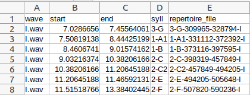
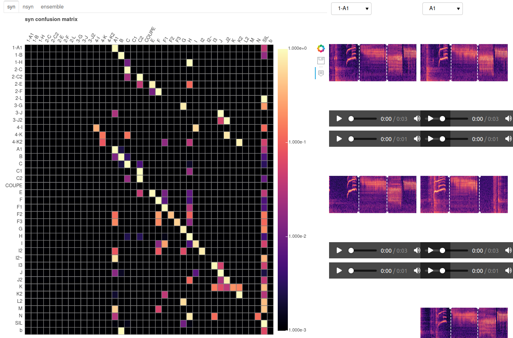
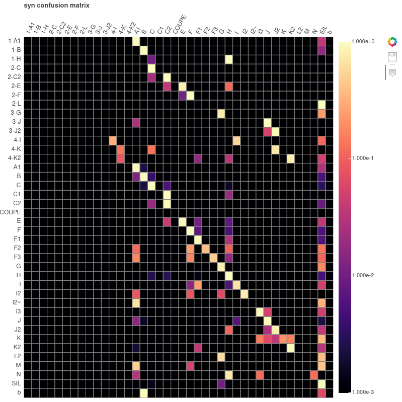
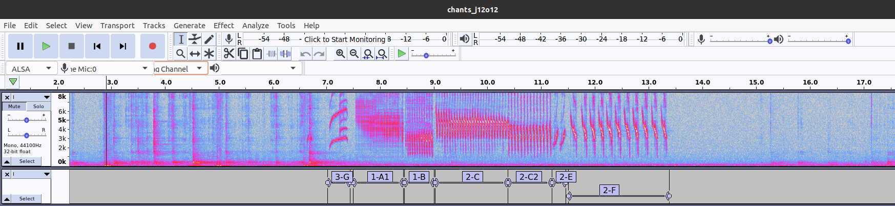
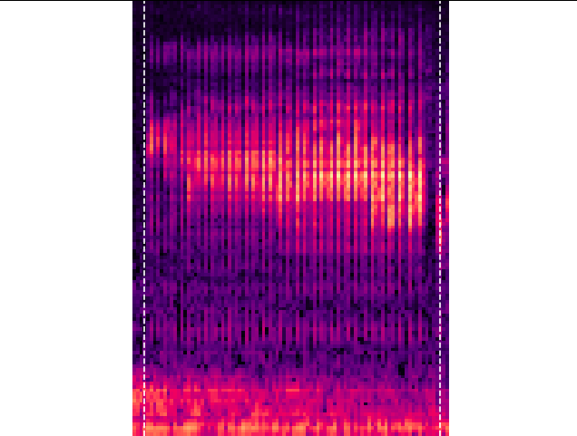

#
Canapy
Automatic audio annotation tools for animal
vocalizations
Tutorial
In this tutorial we will demonstrate step by step the training of a
predictive model based on few annotated songs. After following this
tutorial, you will be able to:
- get corresponding CSV from an Audacity file composed of waves and
their annotations,
- build a model based,
- make annotations with this model on non annotated data.
Summary:
Installation
Canapy dashboard and tools can be installed using pip on the
following repository:
pip install -e git+https://gitlab.inria.fr/ntrouvai/canapy.git
or by installing a local copy:
pip install -e <path to canapy directory containing pyproject.toml>
(this might take a while, consider downloading the zipped repository
and installing it locally instead if you don’t have a good
connection.)
Prepare your dataset
Canapy uses supervised machine learning tools to create automatic
annotators, and thus requires some hand-made annotations to bootstrap
the annotation pipeline. Using our proposed method, we recommend to
ideally have between 30 minutes and 1 hour of annotated sounds to train
an automatic annotator. This may of course vary depending on the nature
of the annotated vocalizations. Canapy was primarily designed to
annotate bird songs, in particular domestic canary songs.
Two sources of data are required to train an annotator: annotations
and audio.
Annotations
Annotations are typically segments of audio labeled using a custom
code representing different vocal units, like phonemes, syllables or
words in human speech. In their most essential form, they are defined
using the triplet (onset, offset, label), representing an annotated
segment, delineated in time.
For the time being, canapy only deals with non-overlapping annotation
segments, and can thus only work on a single track of annotations.
This format is inspired by the M1-spring dataset, a dataset of more
than 400 hand-labeled songs of one domestic canary. It’s a simple,
straightforward format, that is best expressed in a comma-separated
values spreadsheet (.csv file).
Four named columns of data are needed to define an annotation:
wave: the name of the audio track being annotated.start: the beginning of the annotation on the audio
track, in secondsend: the end of the annotation on the audio track, in
secondssyll: the annotation label
[!WARNING] TODO change screenshot
An example .csv file may look like this:

Audio annotations come in many different formats these days. You may
have used Audacity, Raven, or Praat to annotate your data by hand.
By default, canapy uses its own annotation format, called marron1csv,
to process annotation data. To allow using a different format, canapy
was built on top of crowsetta, an audio annotation formats managing
tool, which can handle many different annotation format coming from many
different annotation software. We recommend diving into crowsetta
documentation to learn more about annotation formats.
Audio
Audio recordings handled by canapy can have any sampling frequency.
They must be mono audio recordings. If stereo audio are provided, they
will be converted to mono.
Canapy currently works with two audio data formats: WAV files (.wav)
and Numpy arrays (.npy).
When creating new automatic annotators for your data, you should
provide some hand-labeled audios in order to train canapy to annotate
this data.
Because canapy will try to split your dataset in two parts (one for
training and one to test its capabilities), you should provide several
audio and annotation files. Canapy will consider each audio file as one
sequence of vocalizations, and will never cut this sequence when
training or annotating. When dealing with songbirds for instance, one
file should ideally contain a single song sequence.
Your dataset should therefore looks something like this:
├── song_dataset
└── annotations
├── song1.csv
├── song2.csv
...
└── songN.csv
├── audio
├── song1.wav
├── song2.wav
...
└── songN.wav
Here, .csv files in the annotations/ folder contain annotations in
marron1csv format (depending on your annotation format you may have
different file extension) and .wav files in the audio/ folder are your
audio recordings in WAV format.
You can also provide audio recording and annotation files all mixed
in a single directory:
├── song_dataset
└── data
├── song1.csv
├── song1.wav
├── song2.csv
├── song2.wav
...
├── songN.csv
└── songN.wav
Pay attention to how your audio files are named. Audio filenames will
be used by annotation tools to link annotations with their corresponding
audio. For instance, using the marron1csv annotation format, all values
in the wave column in the .csv files must match one of the
audio filenames.
Once training has been performed, your dataset may consist only of
audio files. As no dataset split is required for annotating files, your
dataset may be one single file, or several smaller files. We do not
recommend using too long files however. Depending on your computer,
using very long recordings may be suboptimal, or even crash the
annotator.
Run the dashboard
You can now launch the dashboard to train the annotation models and
check the quality of the dataset.
To run the dashboard, simply do:
canapy ./bird1_dataset ./bird1_output
The dashboard should open in your browser, at localhost:9321. If not,
simply reach localhost:9321 in your favorite browser. All the data
produced by the dashboard (models and checkpoints) will be stored in
./bird1_output. The first dashboard you will see in the one
devoted to train the model.
Dashboard 1: train
Click on the button start training to begin the training
of the models and then produce the annotations. Metrics should display
in the terminal where you started the dashboard. At the end of the
training sequence, click on “Next step” to display the “eval” dashboard
(it can take some time to display, don’t worry, click only
once on the button). The first dashboard will train
annotation models on the current version of the dataset, and produce
their respective versions of the annotations.
Two models are built during the training phase. They both are based
on an Echo State Network (ESN), a kind of artificial neural network, and
have the same parameters. They are, however, trained on two different
tasks:
- the syn model (syntactic model) is trained to
annotate whole songs. Entire songs and annotations files are presented
to the models during training. Thus, the model is trained only on the
available data, meaning that imbalance in number between the categories
of bird phrases is preserved. The model is also expected to rely on
syntactic information to produce its annotations, being trained on the
real order of the phrases in the songs.
- the nsyn model (non syntactic model) is trained to
annotate only randomly mixed phrases, with an artificially balanced
number of phrases samples. This model is expected to rely only on inner
characteristics of each type of syllables to annotate the songs, without
taking into account their context in the song. Imbalance in number is
also not preserved, meaning the model has to give the same
importance to all categories of syllables.
Finally, a third model, called ensemble, combine the
outputs of the two previous models with a vote system, to combine the
“judgements” of the two models in a new one.
Dashboard 2: eval
The second dashboard displays the performances of the three models
during the real annotation task: all three models are fed with
the whole songs contained in the hand-annotated dataset, and we will now
look at the differences between their annotations and the handmade
ones.
This dashboard is divided in two parts:
- the Class merge dashboard
- the Sample correction dashboard You can switch between them with the
buttons at the top of the dashboard.
Class merge
In the Class merge dashboard, you can use the confusion
matrices to inspect syllables categories where the models make a lot of
mistakes. If the mistake pattern seems stable (high confusion between
two classes, and potential agreement between the models), this could be
the sign that the confused categories could be merged into one. This
happens a lot on handmade annotations, due to obvious spelling mistakes
in the annotations labels, or to disagreement in the naming between the
human annotators, or to “over-classification” of certain patterns.
 You can use the inspector at the
right of the confusion matrices (clicking on the two buttons at the top
right of the above screenshot) to display some class samples and see if
a merge is coherent. When you have taken your decision, simply write the
new name of the class you want to modify in the correction panel at the
extreme right of the dashboard (for example, if you want to merge
categories A and A1, because they are really close, simply write “A”
under “A1” class text input). If the class contains few samples and
doesn’t seem well-founded you can delete it by writing ‘DELETE’ in the
text input under the name of the syllable category. Sometimes, some
classes contains very few instances that are not sufficient for the
model to recognize them, meaning they will not be usable. In this case
making a ‘TRASH’ class is a good idea.

Make sure to click on the Save corrections button under
the syllable types input text to save your changes.
Moreover, you can find help to make corrections while looking to the
metrics indicated under the confusion matrix.

For
example here the models achieve 97.06% accuracy each which is pretty
good. However, you can see classes like C1, L, L2… that scores 0% in
precision, recall and f1-score, meaning they may be deleted. If you
choose to keep this model it will do a great job detecting the other
classes but may lack experience recognizing the phrases labeled as C1,
L,L2…
Sample correction
You can also inspect the samples about which the models disagree the
most in the Sample correction dashboard. Here, all the
annotations that are confused with another class over at least 2/3 of
their time length by the models can be displayed, and manually corrected
(the 2/3 time length disagreement parameter can be changed in the
configuration file (see section 6.)). Again, at the right of the bar
plot showing the disagreements’ distribution, an inspector allows you to
display samples of all the categories of syllables. The models aren’t
always right, as they use prediction you have the last word on which
label to attribute to a phrase. If the sample correction is empty, don’t
panic! it only means that the models performs well (maybe too well?) on
the dataset. It is often the case with little datasets, where the models
overfit the misrepresented categories of syllables. In any way, you
should first focus on merging whole categories of syllables before
correcting single samples.
Make sure to click on the Save all button on the right
of the distribution figure to save your changes.
Next step
You have two choices then:
- click the
Next step button. This will redirect you to
the ‘train’ dashboard. Indeed, after you have applied corrections on the
dataset, you should retrain the models to see the increase in
performance, and to check if by changing the data distribution new
disagreements do not appear. You should do 3-4 iterations of
training-evaluating to be sure that you have fixed all the annotations.
Below, the comparison of the initial confusion matrix of the syntactic
model and its matrix after some corrections:
 
- click the
Export button. If you are happy with the
models performances and the annotations’ distribution of the dataset,
after some iterations, you can click on this button to be redirected to
the ‘export’ dashboard. This dashboard will simply retrain all the
models with all the corrections applied on the dataset, and save them in
the output directory, with the correction file, the configuration file,
etc.
In any case, a checkpoint of the current state of your analysis will
be saved : corrections, configuration, models and annotations will be
stored in the output/checkpoint directory, in a
subdirectory named after the iteration number (1 if it is
your first run, 2 if it is the second time you apply
corrections and train models, and so on).
Output directory
After training your model you will find in the
./bird1_output directory:
checkpoints: corrections, configuration, models and
annotations corresponding to a round of training, in a subdirectory
named after the iteration number (1 if it is your first
run, 2 if it is the second time you apply corrections and
train models, and so on).models: ‘syn’ and ‘nsyn’ program corresponding to the
final version of the syntactic and non syntactic models you have
trainedannotations.json: a JSON file containing all the
annotations for the songs, if you want to open it, do that with Python,
a Text Editor will crash.config.json: a JSON file containing the models’
parameters, you can know more about it in the Config object part.corrections.json: a JSON file containing your class
merges and sample corrections round after round, it looks like this:
{
"0": {
"syll": {},
"sample": {}
},
"1": {
"syll": {"1-A1": "A1", "1-B": "B","I2~": "DELETE", "L2": "G"},
"sample": {"1116": "K2", "1443": "F1", "2001": "F1"}
},
...
"5": {
...
}
}
vocab.json: a JSON file listing all the syllable
categories, it looks like this:
Use the models on an other
dataset
Now that you have produced 2 neural networks and an ensemble model to
correctly annotate bird songs, you can apply them on not annotated
data.
To do so, we will use the canapy simple API, and a little
of Python.
This part can be executed using the Jupyter Notebook:
Tutorial_annotating_with_canapy, available in the Canapy
folder.
First, in a coding environment, create an Annotator object:
from canapy import Annotator
annotator = Annotator("./bird1_output/models")
This object will call every function you need to produce annotations
from the dataset, using the models we’ve trained in the dashboard. Make
sure that the reservoirpy version you are using is the same as the one
used for the model training, otherwise it won’t work.
In this example, the ./bird1_non_annotated_songs
directory contains only .wav audio files, one per song, ready to be
annotated.
The Dataset object may look new to you, but it is in fact already
used in the backend of the dashboard. It stores the dataset in the form
of a Pandas Dataframe (in this case, only paths to audio files), but can
also store annotations, corrections, configuration files, and apply
everything to the audio and labels to correct them and extract the
features needed by the models to annotate them. For now, we only need
them to store the audio files and the configuration file, which is here
by default. It also automatically creates the class “SIL”, which
represents all the non annotated (and thus silent) part of the
songs.
from canapy import Dataset
dataset = Dataset("./bird1_non_annotated_songs", vocab = annotator.vocab)
To run the annotator, simply call (it could last a bit long depending
on how many songs you have to annotate):
annotations, vectors = annotator.run(dataset = dataset)
That’s it! The annotations variable now looks like a
dictionary:
{
"syn": {
"000-song-name.wav": ["SIL", "SIL", "A", "A", "A", "B", "C"...],
"001-song-name.wav": [...],
...
},
"nsyn": {
...
},
"ensemble": {
...
}
}
This dictionary stores all the annotations of the syntactic model,
with the audio file name attached. If you want to annotate with the
other models (non syntactic and ensemble) you can do it by specifying
the parameter model to nsync, ensemble, or all.
The vectors variable looks the same, but stores the raw
responses of the models (the output vectors representing the decision of
the neural network).
Notice that the annotations look like they are repeating in time a
lot. To export only the sequence of annotations in time, not all
annotations for all timesteps, simply set the to_group
argument to True when calling the annotator:
annotations, _ = annotator.run(to_group=True)
The annotations will now look like this:
{
"syn": {
"000-song-name.wav": [("SIL", 2), ("A", 3), ("B", 1)...],
"001-song-name.wav": [...],
...
},
"nsyn": {
...
},
"ensemble": {
...
}
}
The annotations have been grouped. The number that comes along each
annotation label is the number of timesteps covered by the annotation,
i.e. the duration of the bird phrase, in number of spectral analysis
windows. This number can be easily converted in seconds knowing the
sampling rate and the time jumps between each analysis windows, but this
can of course lead to huge approximations.
If you really need to display this time in seconds, simply use:
new_annotations = to_seconds(annotations, dataset.config)
Be careful, this function works with the grouped annotations from one
model. Hence, you shouldn’t give it the annotations produced by
annotator.run(model='all',dataset=dataset,to_group=True).
We will explain in the Config object
section how the configuration stored in the dataset works.
Finally, you can directly save these annotations in CSV files by
using the csv_directory parameter. This parameter take the path where
you want to save the new CSV as input. Moreover, this parameter
automatically activates the grouping function, you don’t have to specify
it to get a concise CSV.
annotations, _ = annotator.run(dataset=dataset,csv_directory="./tuto_non_annotated_songs_annotated")
The Config object
Modifying this object could be useful if you are manipulating other
birds than canaries (changing the sampling rate for example)
Configuration can be changed by creating a JSON file suffixed
.config.json.
A configuration file looks like this. All the keys are mandatory:
[misc]
seed=42
[transforms.annots]
time_precision=0.001 # seconds
min_label_duration=0.02 # seconds
lonely_labels=["cri", "TRASH"]
min_silence_gap=0.001 # seconds
silence_tag="SIL"
[transforms.audio]
audio_features=["mfcc", "delta", "delta2"]
sampling_rate=44100 # Hz
n_mfcc=13
hop_length=0.01 # seconds
win_length=0.02 # seconds
n_fft=2048 # audio frames
fmin=500 # Hz
fmax=8000 # Hz
lifter=40
[transforms.audio.delta]
padding="wrap"
[transforms.audio.delta2]
padding="wrap"
[transforms.training]
max_sequences=-1
test_ratio=0.2
[transforms.training.balance]
min_class_total_duration=2 #30 # seconds
min_silence_duration=0.2 # seconds
[transforms.training.balance.data_augmentation]
noise_std=0.01
[model.syn]
units=1000
sr=0.4
leak=0.1
iss=0.0005
isd=0.02
isd2=0.002
ridge=1e-8
backend="multiprocessing"
workers=-1
[model.nsyn]
units=1000
sr=0.4
leak=0.1
iss=0.0005
isd=0.02
isd2=0.002
ridge=1e-8
backend="multiprocessing"
workers=-1
[correction]
min_segment_proportion_agreement=0.66
Configuration Parameters
[misc]
- seed = 42: Defines the seed for random number
generators to ensure reproducible results.
- time_precision = 0.001: Time accuracy of
annotations, in seconds.
- min_label_duration = 0.02: Minimum duration of a
label, in seconds. Labels shorter than this value will be ignored or
merged.
- lonely_labels = [‘cri’, ‘TRASH’]: List of labels
considered ‘isolated’ and which may require special treatment.
- min_silence_gap = 0.001: Minimum silence interval,
in seconds, to separate two audio segments.
- silence_tag = ‘SIL’: Tag used to mark silence
segments.
- audio_features = [‘mfcc’, ‘delta’, ‘delta2’]: List
of audio features to be extracted, in this case the mel-frequency
cepstral coefficients (MFCC) and their first and second
derivatives.
- sampling_rate = 44100: Audio sampling rate, in
Hertz.
- n_mfcc = 13: Number of MFCC coefficients to
extract.
- hop_length = 0.01: Jump interval between analysis
windows, in seconds.
- win_length = 0.02: Length of analysis window, in
seconds.
- n_fft = 2048: Number of points for the Fast Fourier
Transform (FFT), used to calculate the spectrogram.
- fmin = 500: Minimum frequency to be considered when
extracting characteristics, in Hertz.
- fmax = 8000: Maximum frequency to be considered
when extracting characteristics, in Hertz.
- lifter = 40: Parameter for lifting cepstral
coefficients, often used to accentuate the high-frequency
characteristics of MFCCs.
- padding = ‘wrap’: Padding method for first
derivatives (delta), here using circular padding.
- padding = ‘wrap’: Padding method for second
derivatives (delta2), here using circular padding.
- max_sequences = -1: Maximum number of sequences for
training. -1 can mean that there is no limit.
- test_ratio = 0.2: Proportion of data used for the
test, in this case 20%.
- min_class_total_duration = 2: Minimum total
duration for each class when balancing data, in seconds.
- min_silence_duration = 0.2: Minimum duration of
silence segments to consider when balancing data, in seconds.
- noise_std = 0.01: Standard deviation of noise added
for data augmentation, here to simulate white Gaussian noise.
[model.syn]
- units = 1000: Number of units in the recursive syn
model.
- sr = 0.4: Sampling rate syn.
- leak = 0.1: Leakage parameter for recurrent
units.
- iss = 0.0005: Parameter for input scaling syn.
- isd = 0.02: Parameter for syn density.
- isd2 = 0.002: Second syn density parameter.
- ridge = 1e-8: Ridge regularisation parameter.
- backend = ‘multiprocessing’: Backend used for
parallel calculation.
- workers = -1: Number of workers for the
multiprocessing backend. -1 means using all available CPUs.
[model.nsyn]
The same parameters as for [model.syn], applied to another recurrent
model (nsyn).
[correction]
- min_segment_proportion_agreement=0.66: Minimum
proportion of agreement to consider a segment as valid when correcting
annotations.
You can create your own configuration file by adding it in the
directory where the dataset is loaded. For example, a good dataset
directory structure would be:
└── dataset
├── audio+labels
└── myconfig.config.json
Where the audio+labels directory could be the output of
the Audacity converter, or just some audio files. If you call a Dataset
object at the root of the dataset directory, the
configuration file will be automatically loaded.
In a program, you can then access the configuration through the
config attribute of a Dataset object. All the keys of this
config can be accessed like regular attributes or like dict
keys:
config = dataset.config
sampling_rate = config.sampling_rate
sampling_rate = config["sampling_rate"]
Support
If you have any problems with using Canapy, don’t hesitate to contact
Nathan Trouvain or Albane Arthuis at Inria Mnemosyne team: nathan.trouvain@inria.fr albane.arthuis@inria.fr
[! WARNING] TODO: this becomes useless with new version of audacity.
Maybe remove ?
Export annotations from
Audacity
Audacity is a free and open-source software, with which you can
manipulate audio files and annotate your bird songs. Your songs and
annotations would have this aspect on the Audacity software:
 On the
first line you can see the spectrogram of the song and on the second
line the corresponding annotations track. Make sure that your audio
files contain only one song per file.
Consider the following project storing some bird songs and
annotations in Audacity .aup format:
project
├── bird1
│ ├── songs0.aup
│ ├── songs0_data
│ ├── songs1.aup
│ └── songs1_data
├── bird1_dataset
Your directories don’t have to have the same names as above, just
make sure to enter the name you gave them in the command line. In a
terminal running in the project directory, run :
canapy-audacity-convert -r ./bird1 -o ./bird1_dataset/
This will prompt you to confirm the exportation of the annotations
and audio found in the Audacity files. This will then produce the
following tree:
├── bird1
│ ├── songs0.aup
│ ├── songs0_data
│ ├── songs1.aup
│ └── songs1_data
├── bird1_dataset
├── data
└── repertoire
The data directory stores all annotations tracks in CSV
files. The repertoire provides you extract of phrases based
on the annotations:
- png of spectrograms:

- and sound of the phrase (not the entire song). annotations in the
dataset. You can disable it by removing the
-r option when
calling canapy.audacity.
As stated before, you could also add JSON files such as
corrections.json, vocab.json or config.json:
- corrections.json: if you already have some corrections in mind or if
you already have a corrections.json file from a previous training
(checkpoint or final version) you can put it here. You can check an
example for this file here: corrections.json
example ;
- vocab.json: if you already know the precise list of vocabulary of
your dataset you can make a JSON file like this. Here is an example: vocab.json example ;
- config.json: this is the configuration file of the trained model, it
contains audio manipulation parameters such as the sampling rate. If you
want to modify it please check the Config
object part.